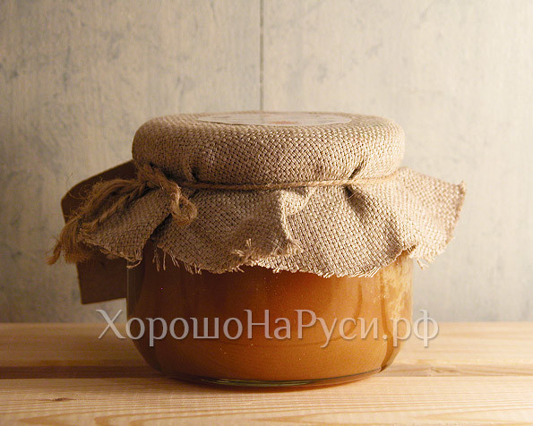
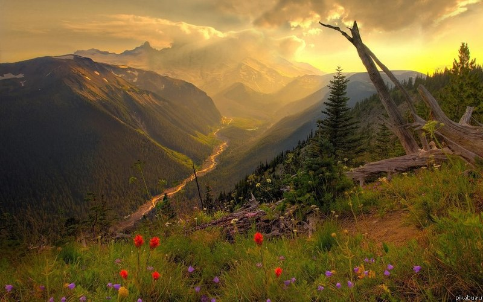

A thick, golden liquid produced by industrious bees. But
how do bees make honey?
Nectar — a sugary liquid — is extracted from flowers using a bee's long, tube-shaped tongue
and stored in its extra stomach, or "crop." While sloshing around in the crop, the nectar
mixes with enzymes that transform its chemical composition
When a honeybee returns to the hive, it passes the nectar to another bee by regurgitating
the liquid into the other bee's mouth. This process is repeated until the
partially digested nectar is finally deposited into a honeycomb.
Once in the comb, nectar is still a viscous liquid — nothing like the honey we eat.
To get all that extra water out of their honey, bees set to work
fanning the honeycomb with their wings in an effort to speed up the process of evaporation.
When most of the water has evaporated from the honeycomb, the bee seals the comb with a
secretion of liquid from its abdomen, which eventually hardens into beeswax. Away from air
and water, honey can be stored indefinitely, providing bees with the perfect food source
for cold winter months.

Гречишный мёд
Гречишный мёд – один из высококачественных сортов меда. По сравнению с
другими
сортами в нём больше белковых веществ и микроэлементов.
Рапсовый мёд обладает светло-желтым или белым цветом. Довольно быстро,
иногда еще в ячейках сот кристаллизуется крупными зёрнами.
Этот мёд служит хорошим у крепляющим и успокаивающим средством, повышает иммунитет,
стойкость к токсинам

Алтайский край — это регион контрастов. На его территории есть бескрайние поля и горнолыжные спуски, озёра
с солёной водой и полноводные реки. Одна из них, Обь, берёт своё начало на Алтае, течёт через всю Сибирь и
впадает в Карское море.
Здесь летом бывает +40°C, в октябре выпадает первый снег, а зима длится полгода — пока в апреле не растают
последние сугробы. Такие суровые зимы не мешают фермерам собирать рекордные урожаи — это делает Алтайский
край крупным аграрным регионом России.
Алтай славится целебным воздухом, источниками минеральной воды, мараловыми ваннами и продуктами
пчеловодства. Алтайский мёд считается одним из самых полезных, потому что в его состав входят нектары
эндемиков — растений, которые можно встретить только в этом регионе.
Алтайский мёд — это разнообразие сортов: гречишный, дягилевый, дудниковый, донниковый, кипрейный,
подсолнечниковый, синяковый, соссюрейный, падевый и многие другие. Каждый из них обладает неповторимым
цветочный ароматом и вкусом знойного лета.
Именно на Алтае делают популярный сорт мёда «Алтайское разнотравье». Для нас его собирает семья Шроо на
собственной пасеке в селе Топольное. Там шумит речка Ануй, горы сменяют равнину, а до ближайшего города
нужно целый час добираться по грунтовой дороге.
Сезон у алтайских пчеловодов открывается ранней весной — с откачки ивового мёда. В мае собирают цветочный
мёд, в июне — эспарцетовый, а в июле-августе — гречишный.
Мёд с Алтая получается очень полезным и питательным. Так, «Алтайское разнотравье» укрепляет иммунитет,
улучшает пищеварение, стимулирует умственную деятельность и нормализует сон.
Больше информации о нашей пасеке вы можете найти на Youtube-канале
Leave a comment
Контактная информация:
Республика Беларусь, г. Минск, 220056
ул. 50 лет Победы 19
stavladyk@gmail.com